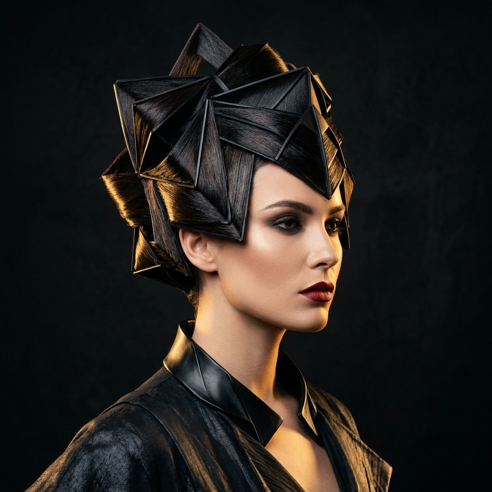
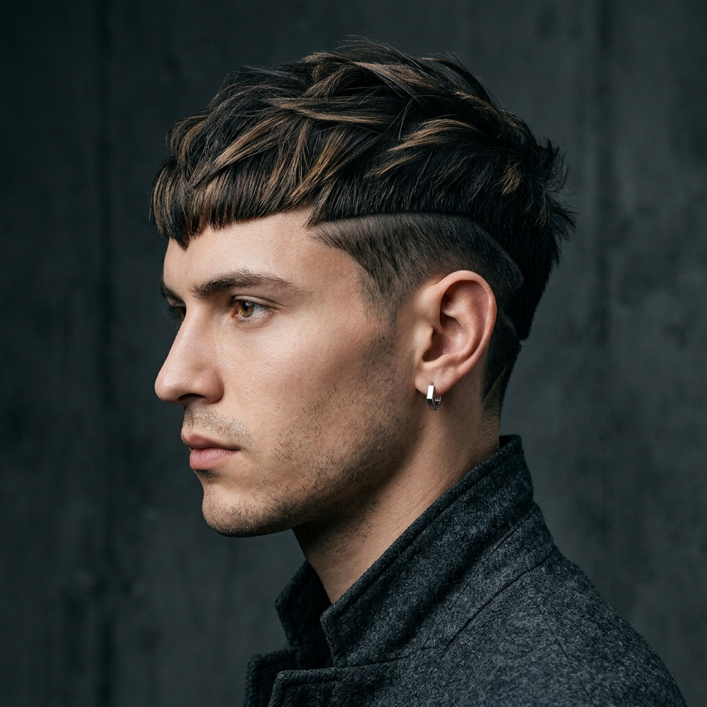
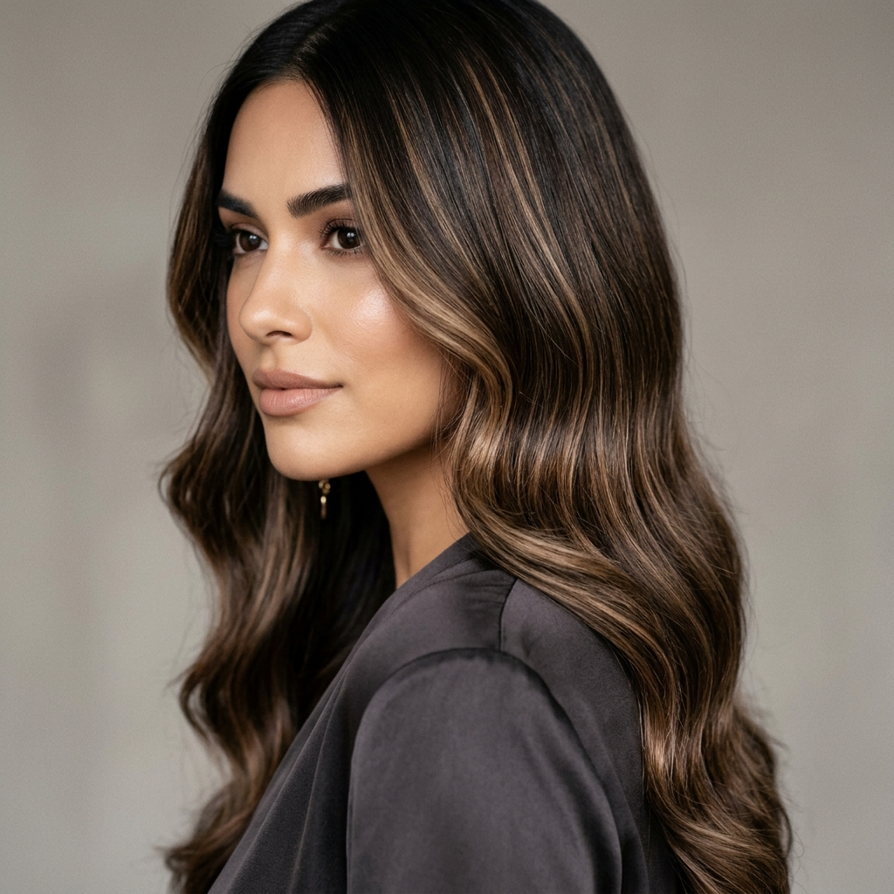

Corte & Visagismo Unissex
Um corte pensado para o formato do seu rosto, seu tipo de fio e sua rotina, com caimento bonito e fácil de arrumar sozinho.
Sessão de 60 minCortes e cores sob medida para o seu rosto, sua rotina e seu estilo. Marcelo Magnoni cria visuais naturais, leves e fáceis de cuidar em Niterói.

Na cadeira do Marcelo, o ponto de partida não é a tendência do momento. É você.
Antes de cortar ou colorir, Marcelo observa seus traços, sua rotina, seu estilo e o comportamento natural dos seus fios. A partir disso, constrói um visual que valoriza sua imagem sem exigir uma manutenção complicada.
Seja para ajustar o corte, iluminar os fios ou fazer uma mudança maior, o processo respeita a saúde do cabelo e busca um resultado bonito no salão e possível no dia a dia.
Um corte pensado para o formato do seu rosto, seu tipo de fio e sua rotina, com caimento bonito e fácil de arrumar sozinho.
Sessão de 60 minIluminação e tons escolhidos para conversar com sua pele, seu estilo e a saúde dos fios, sem resultado marcado ou artificial.
Duração sob consultaTratamentos para recuperar toque, brilho e maleabilidade quando o cabelo precisa de cuidado antes, durante ou depois da mudança.
Sessão de 45 min“O visagismo do Marcelo traduziu exatamente quem eu sou. O corte tem um caimento leve e prático, que se adapta super bem à minha rotina corrida no escritório.
Mariana Santoro Advogada
“Cabelo e barba alinhados com naturalidade e sem aquela vibe engessada de barbearia tradicional. O atendimento individual com o Marcelo faz toda a diferença.
Rodrigo Malta Empresário
“As luzes que o Marcelo fez parecem que nasceram comigo. O cabelo continuou super forte, macio e com um tom champagne leve, sem aquele fundo artificial.
Beatriz Lemos Arquiteta
Consulte os locais, dias e horários disponíveis. Cada atendimento é feito com hora marcada para que Marcelo possa olhar com calma para você, seu cabelo e o resultado que deseja alcançar.


É uma forma de pensar o cabelo a partir de você. Marcelo considera formato do rosto, tom de pele, estilo pessoal, rotina e objetivo de imagem para indicar corte, cor e acabamento com mais harmonia.
O agendamento é feito pelo WhatsApp. Assim, você conversa diretamente sobre o que deseja, tira dúvidas iniciais e confirma o melhor dia, horário e local de atendimento.
Sim. O atendimento é para homens e mulheres que buscam corte, cor, visagismo ou cuidado capilar com uma abordagem técnica, personalizada e natural.
Uma sessão de Corte & Visagismo dura em média 60 minutos. Luzes, coloração e tratamentos podem variar conforme o diagnóstico inicial e o objetivo do resultado.
Chame no WhatsApp para conversar sobre seu cabelo, entender as possibilidades e escolher o melhor horário. O atendimento é individual, direto e pensado para o seu momento.